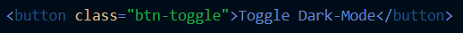
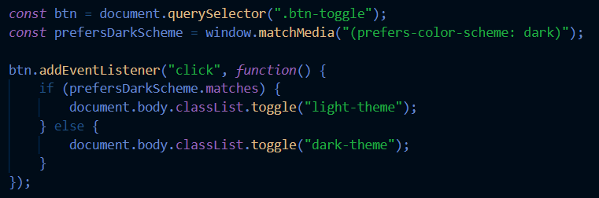
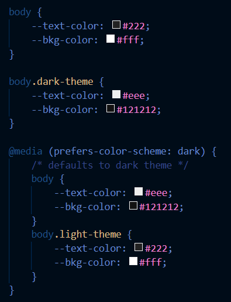
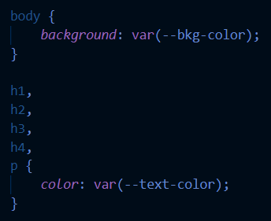

Here you will learn how to use CSS to display dark mode on a site.
You will also learn to toggle between light and dark mode with JS.
First you will build out a typical HTML header and link the css and js
Then you will add a button in HTML:

Next you build out the JS
Add an eventListener that changes when you click the button:

As you can see, with JS we have a light and a dark theme.
For those to work, we have to build out the CSS with the colors to fit each theme:

Finally, for the colors to actually change, we need to use background:var and color:var so the button will work:
Feel free to decide which HTML heading tags you want to include

You can play around with this button to see how it changes the theme of the site.
The Dark Side